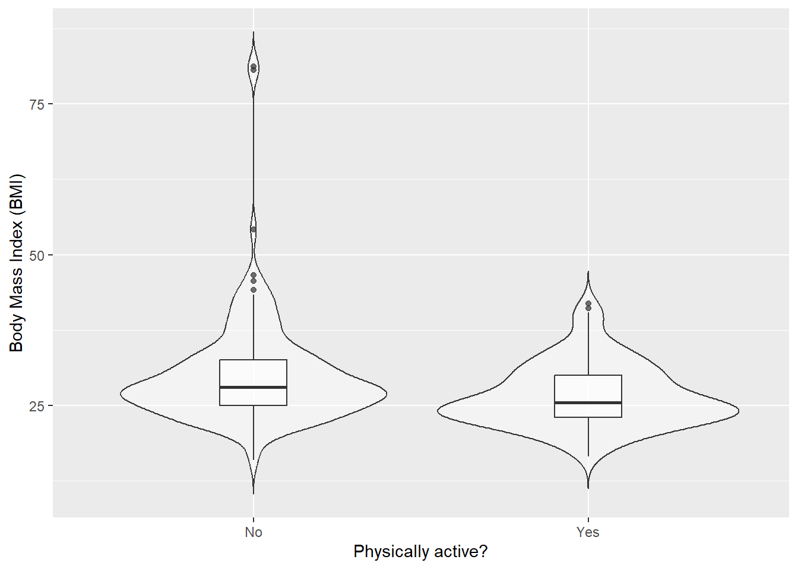
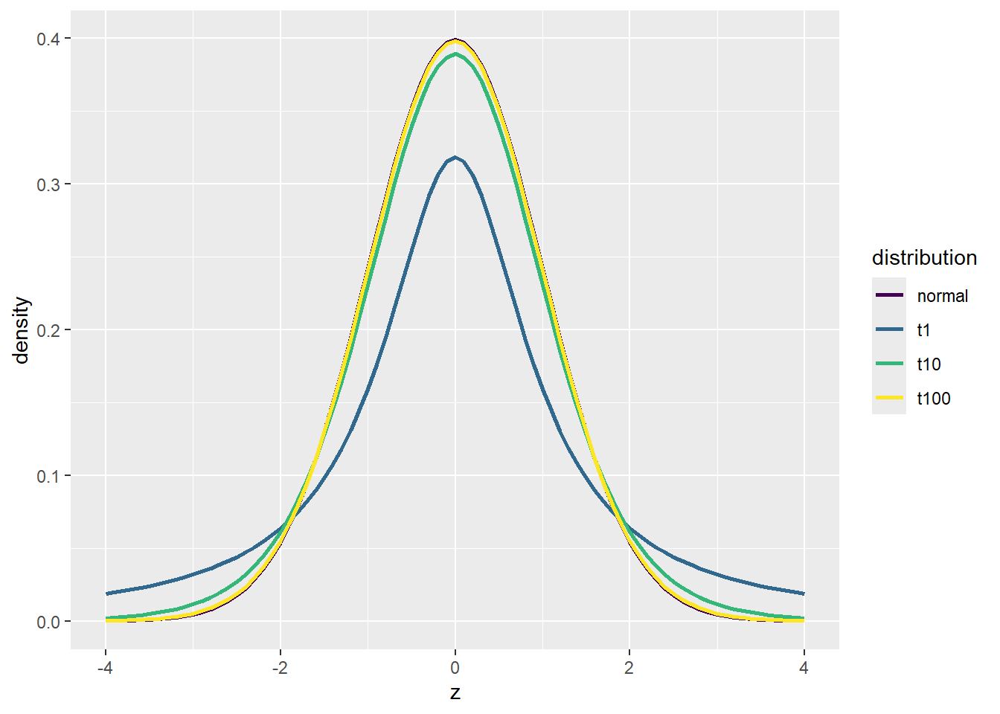
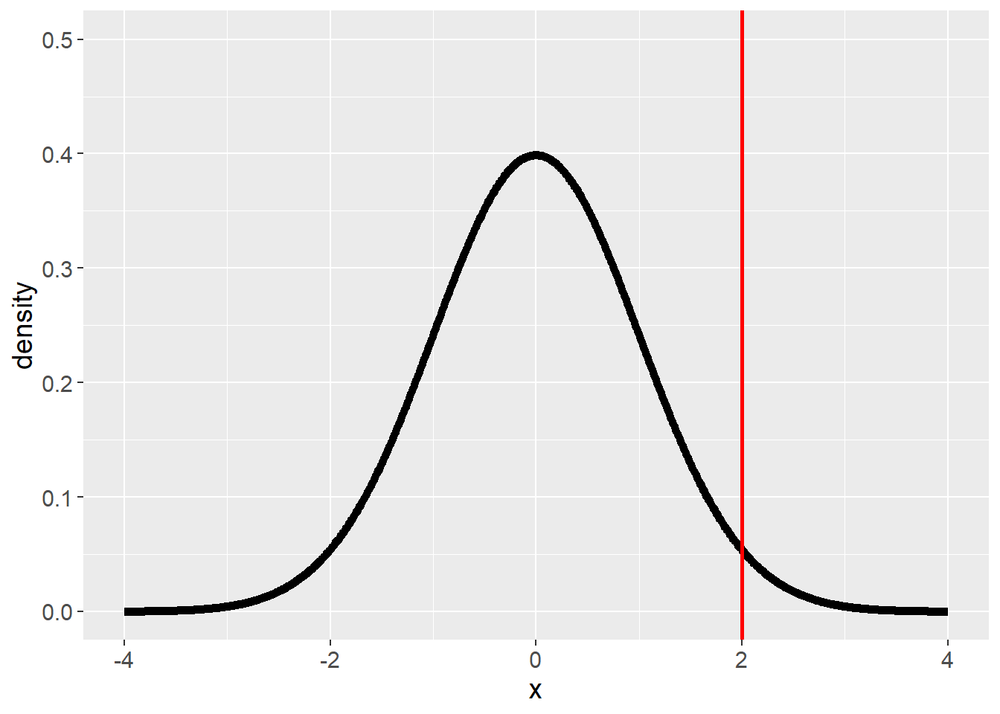
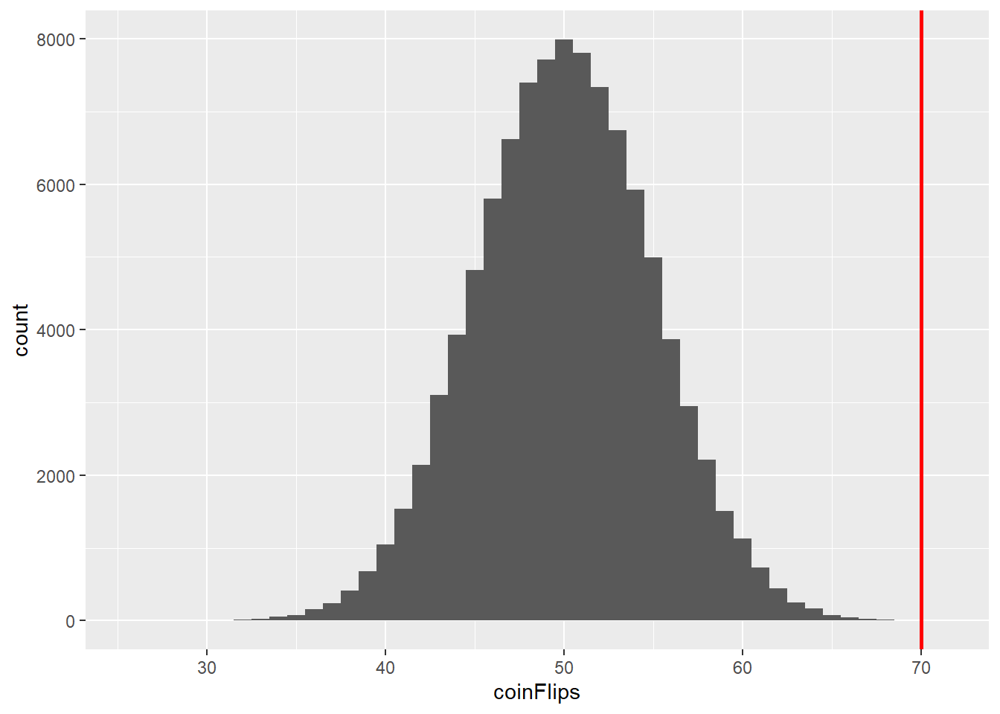
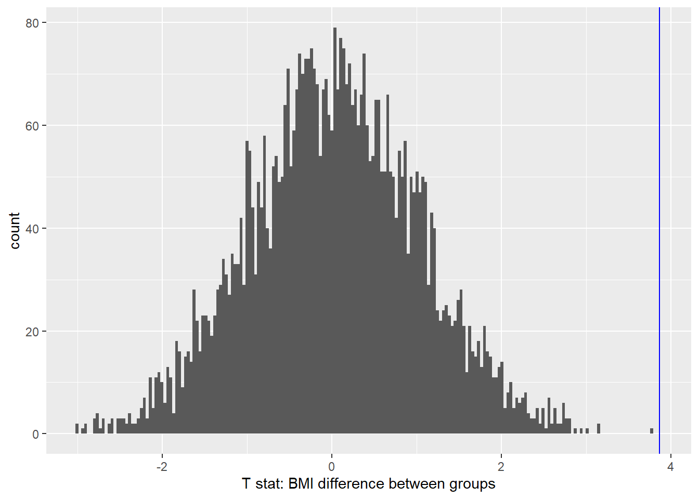
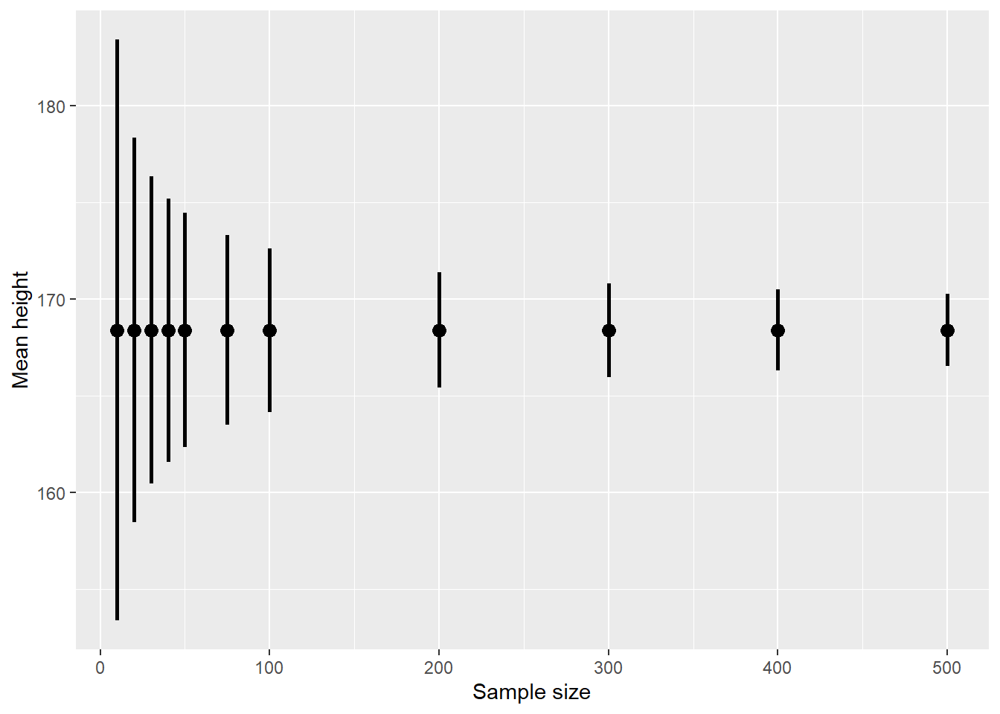
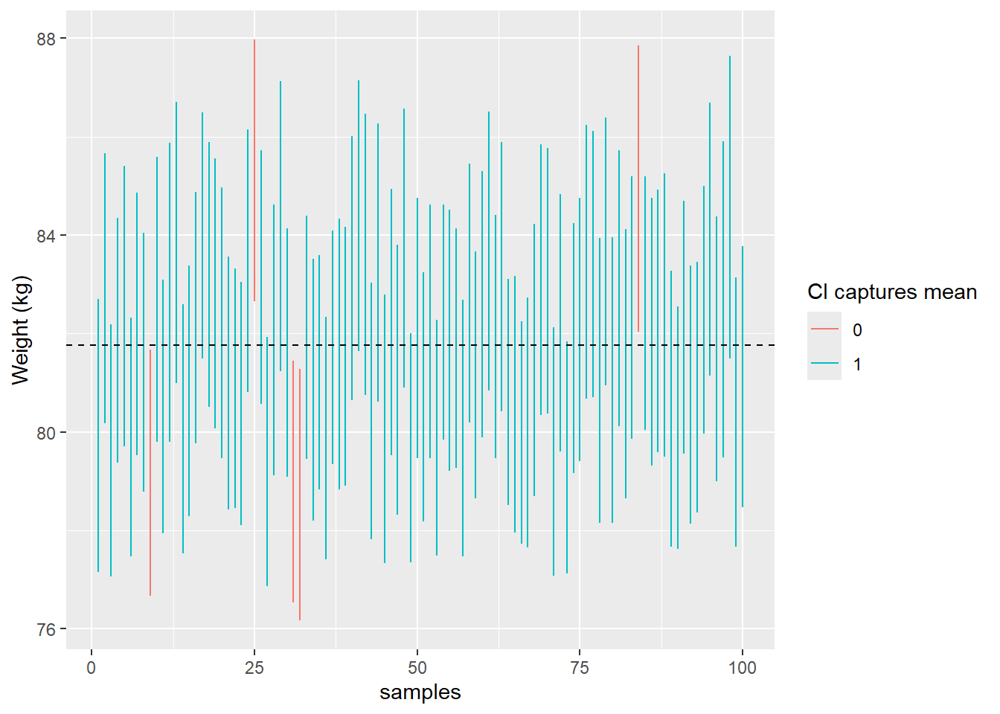
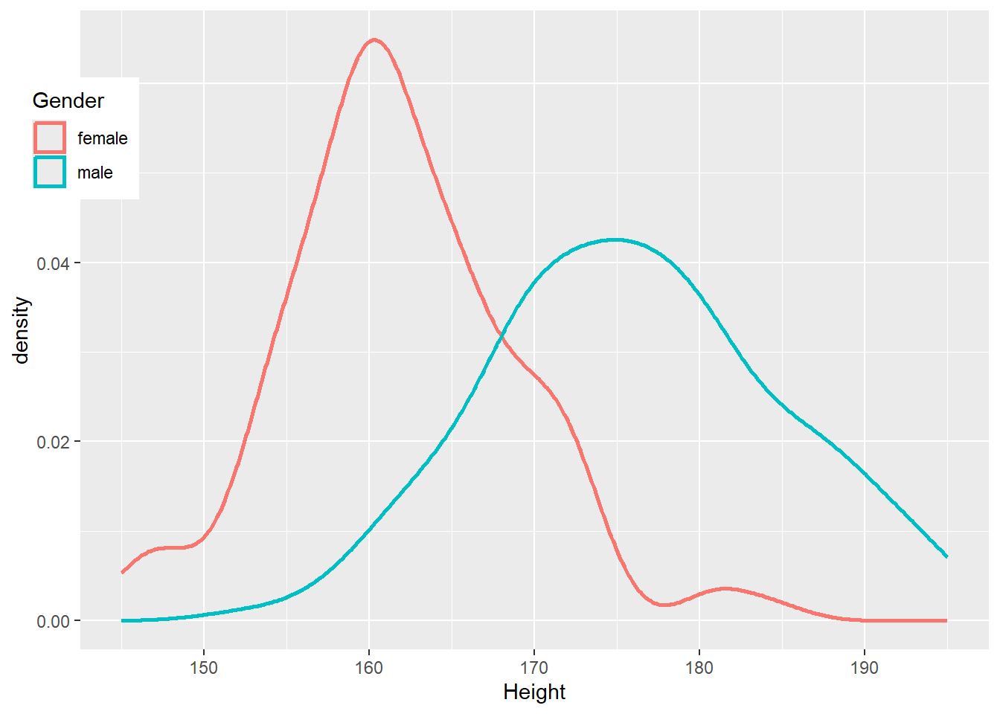
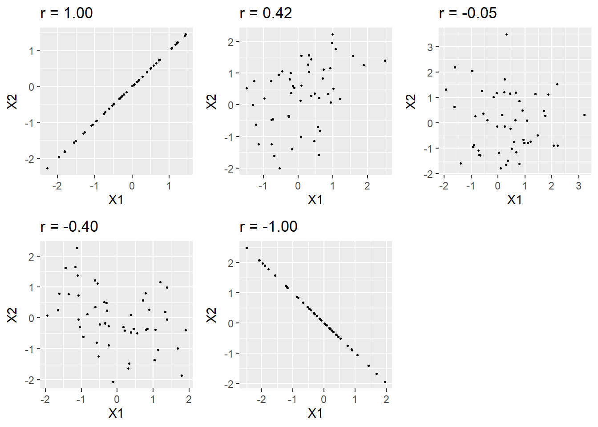
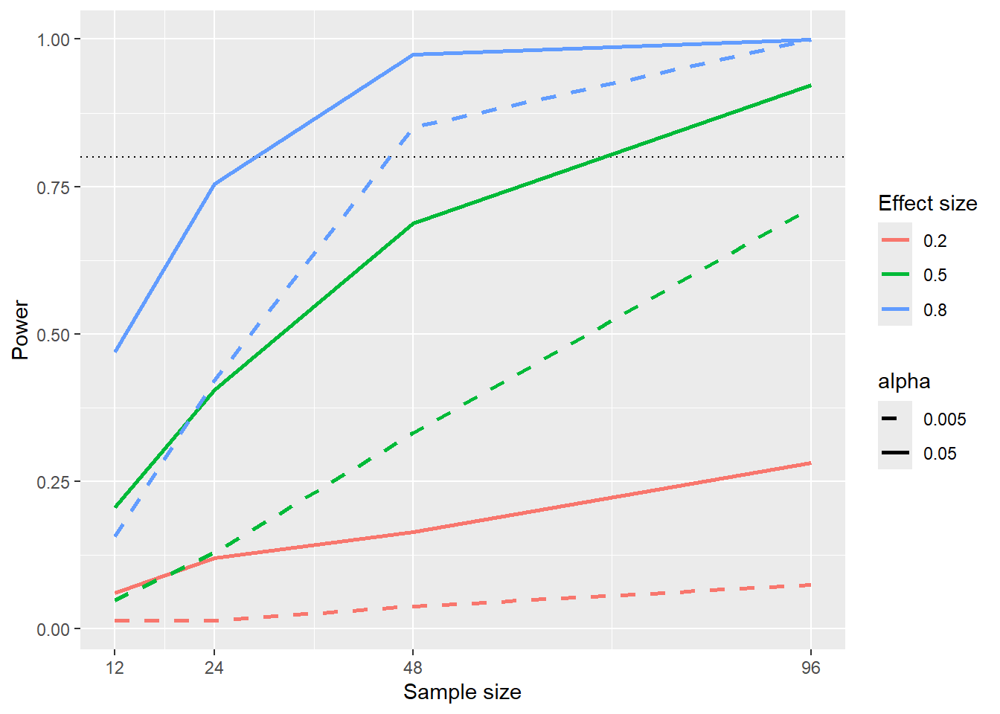

code.sourceCode {
font-size: 1.4em;
}
div.cell-output-stdout {
font-size: 1.4em;
}07 Hypothesis Testing
Julius-Maximilians-University Würzburg
Course: “Biostatistics”
Translational Neuroscience
Course: “Biostatistics”
Translational Neuroscience
Hypothesis Testing
Remember, the three goals of statistics: Describe, Decide, Predict.
We will now turn to deciding whether a particular hypothesis is supported by the data.
. . .
We will cover null hypothesis significance testing (NHST), which is the main technique you will encounter in publications.
. . .
However, NHST is also criticized (see chapter 18 of ST21)! It is often used mindlessly and often misunderstood.
learning to use and interpret results is crucial to understand research
Null Hypothesis Significance Testing
Example: We have two groups (treatment and control). We also have a hypothesis: The treatment group has lower scores on measure X (e.g., symptoms). We have the data (X for both groups), now what?
We take the hypothesis (treatment = lower X than control) and negate it (Treatment not lower/equal X compared to control). This is our null hypothesis.
Then we look at the data and determine how likely they would be if the null hypothesis were true.
I.e., we want to know the conditional probability: \(P(Data|H_0)\)If the data are very unlikely we reject the null hypothesis in favor of the alternative hypothesis (our hypothesis).
(If the data are not very unlikely, we stick with - or fail to reject - the null hypothesis.)
How would you compare the two groups? Calculate the likelihood that there is a reduction in X between the groups? No, more complicated! And counterintuitive!
The Process of NHST
To be more precise, we can break down the process of null hypothesis testing in six steps:
Formulate a hypothesis that embodies our prediction (before seeing the data)
Specify null and alternative hypotheses that reflect the hypothesis formulated in step 1
Collect some data relevant to the hypothesis
Fit a model to the data that represents the alternative hypothesis and compute a test statistic
Compute the probability of the observed value of that statistic assuming that the null hypothesis is true
Assess the “statistical significance” of the result
. . .
Let’s go through these steps, using the NHANES dataset and the research question: Is physical activity related to body mass index (BMI)?
Step 1: Formulate a Hypothesis of Interest
Hypothesis:
. . .
“BMI is greater for people who do not engage in physical activity than for those who do.”
ask for hypothesis?
Step 2: Specify the Null and Alternative Hypotheses
The null hypothesis (\(H_0\)) is the baseline against which we test our hypothesis of interest.
The alternative hypothesis (\(H_A\)) describes what we expect if there is an effect.
NHST works under the assumption that the \(H_0\) is true (unless the evidence shows otherwise).
. . .
We also have to decide whether we want to test a non-directional (\(A \neq B\)) or directional (\(A>B\) or \(A<B\)) hypothesis.
What do we specify if we hypothesize that “BMI is greater…”?
. . .
\(H_0 = BMI_{active} \ge BMI_{inactive}\)
\(H_A = BMI_{active} < BMI_{inactive}\)
Test against \(H_0\): What would we expect the data to look like if there was no effect?
Non-directional: no direction! :D Directional: prior knowledge
Step 3: Collect Data
For this example, we sample 250 individuals from the NHANES dataset.
Attache Paket: 'cowplot'Das folgende Objekt ist maskiert 'package:patchwork':
align_plotsDas folgende Objekt ist maskiert 'package:lubridate':
stamp
Attache Paket: 'MASS'Das folgende Objekt ist maskiert 'package:patchwork':
areaDas folgende Objekt ist maskiert 'package:dplyr':
select| PhysActive | N | mean | sd |
|---|---|---|---|
| No | 131 | 30.1942 | 8.9851 |
| Yes | 119 | 26.6386 | 5.2499 |

Step 4: Fit a Model
We want to compute a test statistic that helps us decide whether to reject \(H_0\) or not.
. . .
The model we fit needs to quantify (= provide the test statistic) the amount of evidence in favor of \(H_A\) relative to the variability of the data.
The test statistic will have a probability distribution, allowing us to determine how likely our observed value of the statistic is under \(H_0\).
. . .
In general, we want to relate an effect (e.g., a mean or a difference of means) to the amount of uncertainty in the data (e.g., the SEM).
. . .
In the example, we need a test statistic that tests the difference between two means (we have one BMI mean for each group): The t statistic.
\[t = \frac{\bar{X_1} - \bar{X_2}}{\sqrt{\frac{S_1^2}{n_1} + \frac{S_2^2}{n_2}}}\]
\(\bar{X_1}\) and \(\bar{X_2}\) are the means of the two group, \(S_1^2\) and \(S_2^2\) are the estimated variances of the groups, \(n_1\) and \(n_2\) are the sizes of the two groups.
. . .
\(\sqrt{\frac{S_1^2}{n_1} + \frac{S_2^2}{n_2}}\) is something like the pooled (“averaged”) SEM of both groups.
The t statistic is appropriate for comparing the means of two groups when the sample sizes are relatively small and the population standard deviation is unknown.
\(\sqrt{\frac{S_1^2}{n_1}}\) alone would be the SEM of subsample 1. But we have to add first before we take the square root.
Reason for adding: The variance of a difference between (or sum of) two independent variables is the sum of the variances of each individual variable (\(Var(A−B)=Var(A)+Var(B)\))
one can view the the t statistic as a way of quantifying how large the difference between groups is in relation to the sampling variability of the difference between means
The t Distribution
The t statistic is distributed according to the t distribution, which looks similar to a normal distribution (the more degrees of freedom, the more “normal”).
Degrees of freedom for the t test: \(observations - 2\) = \(n_1 + n_2 - 2\) (when the groups are the same size).
Degrees of freedom: values that can freely vary when estimating parameters. Usually sample size minus values that you already calculated (e.g. means for the test statistic).
. . .
tibble(z = seq(-4, 4, .1),
t1 = dt(z, 1),
t10 = dt(z, 10),
t100 = dt(z, 100),
normal = dnorm(z)) %>%
pivot_longer(-z, names_to = "distribution", values_to = "density") %>%
ggplot(aes(x=z, y=density, color=distribution)) + geom_line(size=1) + scale_color_viridis_d()Warning: Using `size` aesthetic for lines was deprecated in ggplot2 3.4.0.
ℹ Please use `linewidth` instead.
If the group sizes are unequal: \(\mathrm{d.f.} = \frac{\left(\frac{S_1^2}{n_1} + \frac{S_2^2}{n_2}\right)^2}{\frac{\left(S_1^2/n_1\right)^2}{n_1-1} + \frac{\left(S_2^2/n_2\right)^2}{n_2-1}}\)
Fortunately, R does all these calculations for us :)
DF: we have calculated two means and have thus given up two DFs (these are fixed already)
Will be smaller if sample sizes unequal (here 241.12 vs 248 for equal)
Degrees of freedom are the number of independent values that a statistical analysis can estimate. You can also think of it as the number of values that are free to vary as you estimate parameters
Step 5: Determine the Probability of the Observed Result under the Null Hypothesis
We do not check likelihood of the alternative distribution or likelihood that the null hypothesis is true, but rather:
How likely is it, given that we assume \(H_0\) is true, to observe a statistic at least as extreme as the one we observed.
--> We need to know the distribution of the expected statistic, assuming \(H_0\) is true. Then we can calculate how (un-)likely it is to find the statistic (or a more extreme value) we found in our data.
. . .
Warning: A numeric `legend.position` argument in `theme()` was deprecated in ggplot2
3.5.0.
ℹ Please use the `legend.position.inside` argument of `theme()` instead.
counter-intuitive: We check the nulldistribution not the one of \(H_A\)! But we also don’t check how likely it is that \(H_0\) is true, but rather the likelihood under the null hypothesis of observing a statistic at least as extreme as the one we observed.
at least as extreme: Prob of each particular value = 0
try to find out how weird statistic found is (or weirder) –> count all weird(er) possibilities
A Simple Example
Is a coin biased if we flip a coin 100x and we get 70 heads?
\(H_0: P(heads) \le 0.5\) and \(H_A: P(heads) > 0.5\)
Test statistic = number of heads counted.
How likely is it that we would observe 70 or more heads if the coin is unbiased (chance of 50% for heads)?
. . .
If we flip a (fair) coin 100 times, we would get the following distribution (100000 replications):

It is very unlikely to get 70 heads if the coin is fair!
fair coin: null distribution
P-Value
Let’s go back to out BMI example.
We first need to calculate the t statistic:
| PhysActive | N | mean | sd |
|---|---|---|---|
| No | 131 | 30.1942 | 8.9851 |
| Yes | 119 | 26.6386 | 5.2499 |
\[t = \frac{\bar{X_1} - \bar{X_2}}{\sqrt{\frac{S_1^2}{n_1} + \frac{S_2^2}{n_2}}}\]
\[t = \frac{30 - 27}{\sqrt{\frac{9^2}{131} + \frac{5.2^2}{119}}}\]
\[t = 3.86\]
. . .
The question is: What is the likelihood that we would find a t statistic of this size or more extreme given the number of degrees of freedom and if the true difference between the groups is zero.
\(t\) statistics if we use the unrounded values!
P-Value 2
We can use the t distribution to calculate this probability. We just need the degrees of freedom, which are \(DF = 241.12\), and we can then use all these values (e.g. in a function in R):
#cumulative probability distribution of the student's t distribution
pt(3.86, df=241.12, lower.tail = F)[1] 7.282672e-05This small probability tells us that our observed t value is relatively unlikely if \(H_0\) is really true.
. . .
This is the p-Value for a directional hypothesis. In this case, we only looked at the upper tail probability. With a non-directional hypothesis, we would want to account for both tail probabilities, i.e. how likely it is that a \(t > 3.86\) OR \(t < -3.86\) is found. In this case, we can simply multiply the p-Value found above by 2 (since it is a symmetric distribution):
\(p = 0.000145\)
P-Value using Randomization
We can also use our simulation skills to determine the null distribution!
. . .
We can randomly rearrange (or permute) data so that no relationship is present, e.g. assigning group membership to the participants randomly. In this case, \(H_0\) should thus be true.
We would do this a large amount of times (e.g. 10000), calculate the t statistics for each iteration, and draw a histogram to show the distribution.
P-Values using Randomization 2
# create function to shuffle BMI data
shuffleBMIstat <- function() {
bmiDataShuffled <-
NHANES_sample %>%
select(BMI, PhysActive) %>%
mutate(
BMI = sample(BMI) #randomly shuffle BMI values
)
# compute the difference
simResult <- t.test( #t.test function is more convenient than pt function!
BMI ~ PhysActive,
data = bmiDataShuffled,
)
return(simResult$statistic)
}
# run function 5000 times and save output
nRuns <- 5000
meanDiffSimDf <- tibble(meanDiffSim = replicate(nRuns, shuffleBMIstat()))
#run t test of actual data
bmtTTest <-
t.test(
BMI ~ PhysActive,
data = NHANES_sample,
alternative = "greater"
)
#compare actual data with simulation
bmiPvalRand <-
mean(meanDiffSimDf$meanDiffSim >= bmtTTest$statistic)
#plot everything
plot = meanDiffSimDf %>%
ggplot(aes(meanDiffSim)) +
geom_histogram(bins = 200) +
geom_vline(xintercept = bmtTTest$statistic, color = "blue") +
xlab("T stat: BMI difference between groups") +
geom_histogram(
data = meanDiffSimDf %>%
filter(meanDiffSim >= bmtTTest$statistic),
aes(meanDiffSim),
bins = 200,
fill = "gray"
)
print(plot)P-Values using Randomization 3

The blue line is the observed t statistic. We can calculate a p-Value by counting how many of the simulated t-values are at least as extreme as our observed one and dividing it by the number of simulations. The p-value obtained from randomization (0.000000) is kind of similar to the one obtained using the t distribution (0.000075).
. . .
Using simulations to get the null distribution can be helpful if the assumptions (normal distribution in each group) are violated or if we don’t know the theoretical distribution of the test statistic!
exchangeability: We can use permutations if all observsations are distributed in the same way, such that we can shuffle them without changing the overall distribution.
Not the case if we have dependent observations, e.g. siblings…
Step 6: Assess the “Statistical Significance” of the Result
Is the p-value determined small enough to reject the null hypothesis (and thus conclude that the alternative hypothesis is true)?
. . .
Traditionally, we reject \(H_0\) if the p-value is less than 0.05. (Fisher’s approach)
. . .
(Either there is an effect/\(H_A\) is true or there is a small chance (5%) that there is actually no effect but we coincidentally found such a large value –> false positive)
. . .
Neyman-Pearson approach: In the long run, we will know how often we are wrong:
\(\alpha = .05\) (false positives or Type I error: We reject \(H_0\) although it is correct),
\(\beta = .2\) (false negatives or Type II error: We accept \(H_0\) although it is wrong),
We will be correct if we reject \(H_0\) when it is wrong (there is actually a difference/an effect) or if we do not reject \(H_0\) when it is correct (and there is no difference between groups).
In both cases, a significance level of \(\alpha = .05\) is usually used.
How much evidence do we require?
0.05 Fisher never intended it to be fixed
Before computers, tables were used, and all tables had .05 in it!
Fisher: Evidence for hypothesis, NP: long-run error rate
What does a significant result mean?
There is a lot of discussion about the usefulness of using \(\alpha = .05\) as well as about the interpretation of a significant result/certain p-value!
. . .
A p-value of .01 does….
NOT mean that the probability that \(H_0\) is true is 1%!
- We tested \(P(data|H_0)\) not \(P(H_0|data)\)!
NOT mean that the probability that you’re making a wrong decision is 1%!
- This would also be \(P(H_0|data)\)! p-values are probabilities of data (under \(H_0\)), not probabilities of hypotheses! And we cannot easily use Bayes to turn the condition because we would need additional information like the prior probability of an alternative hypothesis being true.
NOT mean that you would get the same significance 99% of the time if you repeated the study.
- The p-value is a statement about the likelihood of one particular dataset under the null.
NOT mean that you found a practically important effect.
- Difference between statistical significance and practical significance! Effect sizes more important. (Statistical significance depends on sample size!)
Multiple Testing
Nowadays, we often have huge datasets in neuroscience, e.g. collecting brain imaging data of thousands of voxels or quantifying the entire genome.
. . .
Let’s look at genome-wide associations studies (GWAS). We have more than a million places in where the genome could differ. If we want to know whether schizophrenia was associated with any of these differences, we would do ~1.000.000 tests! If we simply used \(\alpha \le .05\) as a threshold, we would get a lot of (\(1000000 * .05 = 500\)!) false positives, even if no true effect is present at all.
. . .
In this case, we have a lot of dependent tests, which form a family of tests. In such a case, we need to control the family-wise error rate, e.g. by fixing it to a total of \(\alpha \le .05\) (i.e. the probability of making any Type I error in our study is controlled at .05).
. . .
One option is to use the Bonferroni correction, in which we divide .05 by the number of tests (e.g. 1.000.000) and use the new value (\(\alpha \le .000005\)) as threshold for each individual test.
. . .
This is extremely conservative and often results in false negative test results.
. . .
For an interesting example what can happen when not correcting for multiple comparisons, see this dead fish showing significant brain activity (Link).
Quantifying Effects and Designing Studies
So far, we have discussed how to use data to test hypotheses, which results in either rejecting or failing to reject the null hypothesis \(H_0\).
However, looking only at the significance (reject or not) ignores the uncertainty we have about the conclusion. We can calculate confidence intervals to quantify uncertainty about our estimates.
Furthermore, we would also like to know how large (i.e., practically relevant) an effect is. For this aim, we will calculate effect sizes.
Finally, we will also talk about statistical power, which tells us how likely we are to find a true effect given our experimental setup (i.e., mostly sample size).
Confidence Intervals
Single value statistic (e.g. t-value, mean…) = point estimate
. . .
We know from the sampling error discussion that each point estimate comes with some uncertainty, described by the standard error.
Remember, the SEM (standard error of the mean) was calculated with the sample standard deviation \(\hat{\sigma}\) and the square root of the sample size \(n\):
\[SEM = \frac{\hat{\sigma}}{\sqrt{n}}\]
\(n\) is generally under our control (\(\hat{\sigma}\) is unknown but fixed*), and we can thus decrease our uncertainty by increasing the sample size.
* In practice, we can acquire homogeneous samples (like students) or heterogeneous samples (like extreme groups). This will, however, influence our generalizability.
. . .
We can more directly describe our uncertainty with confidence intervals (CI), which provides a range of values for our parameter estimate that are consistent with our data! The wider the CI, the more uncertain we are about our estimate.
Confidence Intervals 2
Because the CI depends on the SEM, which decreases with sample size, the CI also gets narrower with increasing sample size:

if we sample the whole population, we know the population parameter and there is no uncertainty at all!
Range of possible values (estimate) in concordance with the data
Confidence Intervals 3
Just like p-values, confidence intervals can be confusing because they are counter-intuitive: A 95% CI for a statistic does NOT mean that we can have 95% confidence that the true parameter falls within this interval!
It is, again, the long-run probability: It will contain the true population parameter 95% of the time in the long-run.
Let’s sample 100 times with \(n = 250\) from the NHANES data and calculate CIs. We use the NHANES mean as true score (dashed line) and check how often the CI misses to include it: 5% of the time.

but: new experiment = new estimate (under exact same conditions would work)!
Calculating the CI
We calculate the CI as follows:
\(CI = \text{point estimate} \pm \text{critical value} * \text{standard error}\)
The “critical value” depends on the sampling distribution. Most of the time, we will use the normal distribution.
CI depends on the confidence level (95%, critical value), the sample size and the variability in the data (both SE)
CI using the Normal Distribution
The critical value are the values of the standard normal distribution that capture 95% (in case of a 95% CI) of the distribution, i.e. the 2.5th and 97.5th percentile.
qnorm(p=c(.025,.975))[1] -1.959964 1.959964The CI of the mean would thus be:
\(CI = \bar{X} \pm 1.96*SE\)
Our mean weight in the NHANES sample was 79.92 kg and the SE was \(\frac{SD_{weight}}{\sqrt{n}} = 1.35\) (for a random \(n=250\) subsample)*.
* In practice, both the mean and standard deviation will be subject to sampling error, i.e., CIs will differ both in location and size despite having the same sample size (cf. plot 2 slides ago)
The lower boundary of the CI of the mean would then be \(CI = 79.92 - 1.96 * 1.35 = 77.28\) and the upper \(CI = 79.92 + 1.96 * 1.35 = 82.56\). We would write this as [77.28, 82.56].
CI using the t Distribution
If we don’t know the population standard deviation, which is usually the case, it is more appropriate to use the t distribution.
In this case, we use the critical value of the t distribution:
qt(p = c(.025, .975), 250) #t distribution depends on sample size! => n = 250[1] -1.969498 1.969498For the NHANES weight example, the CI would be: \(79.92 \pm 1.97 * 1.35 = [77.15, 82.58]\).
The CI for a t distribution is always larger than for a normal distribution. In practice, this difference is negligible at \(n \ge 30\) (1.984 vs. 1.960).
The t distribution is wider than the normal distribution (especially for smaller samples), which means that the CI will be slightly wider -> extra uncertainty smaller samples.
population parameter hast a fixed value, so it either falls into CI or not. (Doesn’t make sense to talk about probability of it)
CI using the Bootstrap
If we can’t assume normality or don’t know the sampling distribution, we can also use the bootstrap to compute the CI.
. . .
Reminder: bootstrap = resampling with replacement, using this distribution as the sampling distribution!
. . .
If we use an R function for bootstrapping (boot()), we get CI estimates that are fairly close to the ones calculated:
BOOTSTRAP CONFIDENCE INTERVAL CALCULATIONS
Based on 1000 bootstrap replicates
CALL :
boot.ci(boot.out = bs, type = "perc")
Intervals :
Level Percentile
95% (78.41, 83.81 )
Calculations and Intervals on Original Scale. . .
| Method | CI |
|---|---|
| normal distribution | [77.28, 82.56] |
| t distribution | [77.15, 82.58] |
| bootstrap | [78.41, 83.81] |
. . .
Note: CIs from the normal and t distribution are always symmetrical around the mean (here: 79.92), bootstrapped intervals need not be.
Relationship of CIs to Hypothesis Tests
If the CI does not include the value of the null hypothesis (usually 0), then the associated two-sided one sample test would be significant.
. . .
If we want to compare two conditions, it gets trickier.
If each mean is contained within the CI of the other mean, then there’s definitely no significant difference.
If there is no overlap between CIs, then there is certainly a significant difference (two-sidedly).
If the CIs overlap (but don’t contain the other mean), it depends on the relative variability of the two variables
In general, avoid this “eyeball test” and look at the p value!
Note: Slightly overlapping CIs can still be significant (e.g., one sided hypothesis)
Effect Sizes
Practical significance!
We need a standard way to describe the size of an effect.
An effect size is a standardized measurement that compares the size of an effect to e.g. the variability of the statistic. This is also referred to as signal-to-noise ratio.
There are many different variants of effect sizes!
Cohen’s d
Cohen’s d is used to quantify the difference between two means, in terms of their SD:
\[d = \frac{\bar{X_1} - \bar{X}_2}{s}\]
where \(\hat{X_1}\) and \(\hat{X_2}\) are the means of the two groups and \(s\) is the pooled SD:
\[s = \sqrt{\frac{(n_1 - 1)s^2_1 + (n_2 - 1)s^2_2 }{n_1 +n_2 -2}}\]
which is a combination of both groups’ SDs (\(s_1\) and \(s_2\)) weighted by their sample size (\(n_1\) and \(n_2\)).
Note that this is very similar to the t statistic, only the denominator differs:
t = SEM, d = SD of the data
–> d will not grow with sample size but remain stable!
Cohen’s d 2
There is a commonly used interpretation of Cohen’s d (although it is criticized to use these cutoffs!):
| d | Interpretation |
|---|---|
| 0.0 - 0.2 | negligible |
| 0.2 - 0.5 | small |
| 0.5 - 0.8 | medium |
| > 0.8 | large |
. . .
effect = NHANES_sample %>% effsize::cohen.d(Height ~ Gender, data=.) %>% {.$estimate} %>% abs() %>% round(2). . .
Even with a large effect of \(d = 1.78\) (as in the NHANES data set), the distributions still overlap greatly!

Small effect but huge total impact: Psychosocial stress due to Covid-19 (deployed to a whole population)
Pearson’s r
Pearson’s r is a correlation coefficient, and thus a measure of the strength of a linear relationship between two continuous variables.
r can vary from -1 to 1: -1 is a perfect negative relationship, 0 no (linear) relationship, and 1 a perfect positive relationship. Try your skills eye-balling the size of a correlation: https://www.guessthecorrelation.com/

more on correlations later in the semester!
Odds Ratio
For binary variables, the odds ratio is a useful effect size.
Odds describes the relative likelihood of some event happening versus not happening:
\[ \text{odds of A} = \frac{P(A)}{P(\neg{A})} \]
Odds ratio is simply the ratio of two odds, i.e. \(\frac{\text{odds of A}}{\text{odds of B}}\).
. . .
Example:
| Status | NeverSmoked | CurrentSmoker |
|---|---|---|
| No Cancer | 2883 | 3829 |
| Cancer | 220 | 6784 |
\[OR = \frac{\frac{220}{220+2883}}{\frac{6784}{6784+3829}} = 23.22 \]
The odds ratio of 23.22 tells us that the odds of lung cancer in smokers are roughly 23x higher than that of non-smokers!
Statistical Power
Remember: Type I and Type II error!
Tolerance for Type I errors set to \(\alpha = 0.05\), which is very low –> we want to avoid this error!
What about Type II errors?
. . .
Type II = failing to reject \(H_0\) although an effect exists (often set at \(\beta = 0.20\), i.e., a statistical power of \(80\%\)).
But \(\beta\) also depends on the effect size: The likelihood of finding a large effect is higher than finding a small effect (at constant \(n\))!
. . .
Statistical power is the complement of the Type II error:
The likelihood of finding a positive result given that it exits!
\[power = 1 - \beta\]
. . .
Statistical power is affected by three factors:
sample size (larger n = more power)
effect size (larger effect = more power)
Type I error rate (smaller Type I error = less power)
Type I: false positives
Type II: false negatives
Statistical Power 2
Here, we can see how these three factors influence the power (i.e. the proportion of significant results found):

The black dotted line denotes the standard 80% power that is often aimed at.
. . .
Even with \(n = 96\), we have only little power to detect a small effect (\(d = 0.2\)): Only ~25% of studies would find the true effect. This means doing this study would be futile, we would likely fail to find the true effect.
. . .
Therefore, we would do a power analysis before we even run the study - to determine the necessary sample size for a well-powered study that would be able to find an effect if the effect is true.
Furthermore, positive findings from an underpowered study are more likely to be false positive!
More on that in Chapter 18 of ST21!
Thanks!
That’s it for today!
Until next week, you should have decided for a data set for your analysis!
Next week, we will start with implementing analyses in R.